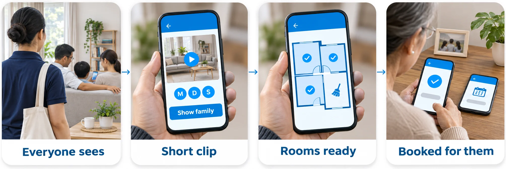

Family in the Loop
CustomersEasy to build

- 1

The cleaner arrives while the family waits on the sofa.
- 2

A short clip shows the family what was done.
- 3

A floor plan shows which rooms are ready again.
- 4
A relative books the next visit for the parent.
Problem
The person who decides is not in the room, and the family has to move out of every room I clean.
What you gain
The person who decides sees the work, so I wait less for a yes.
Brings the next customer
A relative can book the next visit for the parent, so the household keeps using me.
Why build it
It is an easy build, one page for the whole household, and it reaches people who decide but are never in the room.
Who has it
Households with two incomes, landlords who live away, families during a cleaning or repair.

Also inside
- Night before card
- Quiet visit choice
- Link for the whole family
- Book for a relative